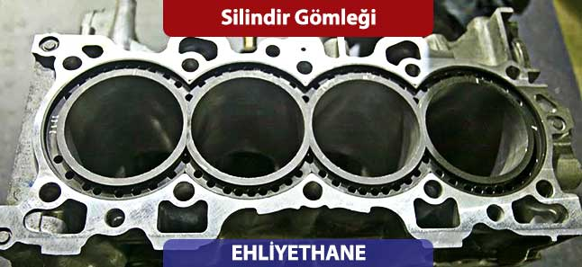
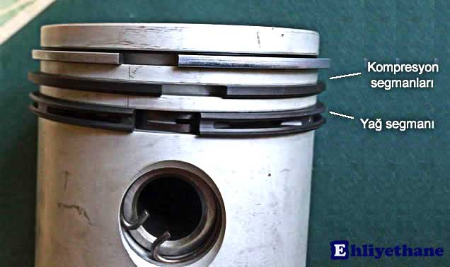

Silindir gömleği, pistonların içerisinde hareket ettiği ve yanma olayının gerçekleştiği bir elemandır. Halk arasında motor gömleği olarak da bilinir. Benzinli motorlar için su ve hava soğutmalı silindir gömleği, dizel motorlar içinse sulu ve kuru silindir gömleği bulunmaktadır.
Silindir gömleği yada diğer adıyla motor gömleği, silindir boşluklarının içinide pistonların aşağı yukarı yönlü hareketlerinde dış çerçeveyi oluşturan parçadır. Pistonlar biyel kolu vasıtası ile silindir gömleğinin içerisinde hareket eder.
Pistonların üst kısmı yanma odasına alt kısmı ise kartere bakar. Pistonların her aşağı yönlü hareketinde pistonlar yağlanmış olur. Pistonların yağlama işlemi esnasında ve patlama esnasında sızdırmazlığın sağlanması gerekir. Bu sızdırmazlığı sağlayan pistonların etrafına bilezik gibi takılan segmanlardır.

Silindir gömleği iç yüzeyi, yanma odası ve karter arasındaki sızdırmazlığı sağlayan segmanların sürtündüğü yüzeydir.
Motorun çalışması bildiğiniz üzere yanma odasında gerçekleşen patlamalar sonucu ısı enerjisinin mekanik enerjiye dönüşümü şeklinde gerçekleşir. Yanma odasının çerçevesini de silindir gömleği oluşturduğu için, gömlek çok yoğun ısı ve basınca maruz kalır. Aracın bakımına dikkat edilmemesi, yağının ve suyunun düzenli aralıklarla kontrol edilip eksiğinin tamamlanmaması da maruz kalınan ısı ve basıncı daha da artırır. Bu tür hatalı kullanımlar gömlekte kalıcı deformasyona neden olur ve segmanlar artık sızdırmazlığı sağlayamaz hale gelir. Bunun sonucunda motor yağ yakmaya başlar.
Böyle bir durumla karşılaştığınızda silindir gömleğinin değişimi gerekmektedir. Gömlek değişimi motorun rektifiye edilmesinde yapılan işlemlerden biridir. Rektifiye işleminin ne olduğuna daha sonraki yazımızda değineceğiz.
Gömlek değişimi titizlik ve profesyonellik gerektiren bir işlemdir. Hatalı yapılan gömlek değişimi motorunuzda daha ciddi sorunların çıkmasına neden olabilir. Gömlek değişimini mutlaka güvendiğiniz bir serviste yaptırınız.